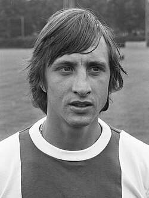
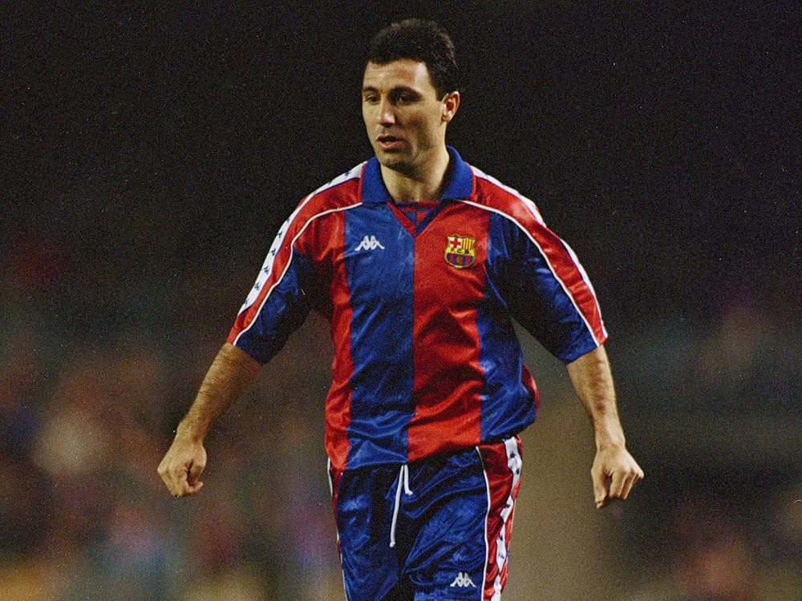
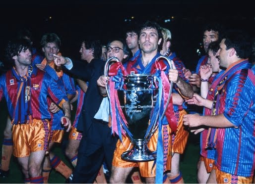
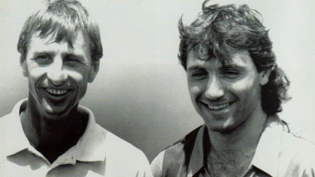
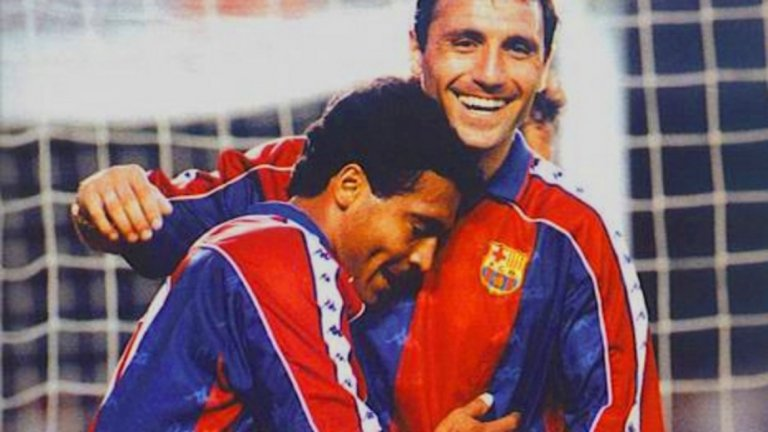
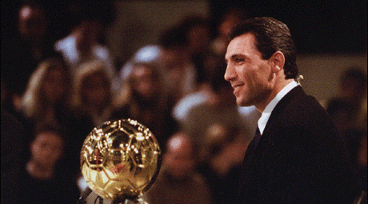
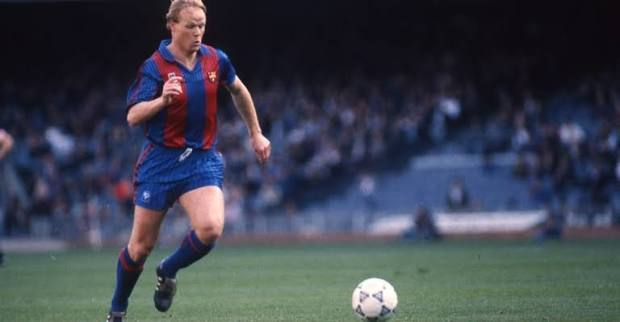
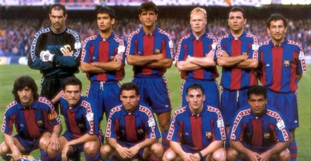

Йохан Кройф, Христо Стоичков и раждането на „Дрийм Тима“
Когато Йохан Кройф пое треньорския пост в Барселона през 1988 година, клубът се намираше в дълбока криза. Легендарният нидерландец обаче не донесе просто нови тактики – той донесе изцяло нова философия, променила завинаги ДНК-то на каталунския гранд. Кройф наложи стила "Тотален футбол", базиран на бързи пасове, контрол над топката и постоянна преса.

Неговата философия изискваше не просто атлети, а интелигентни футболисти с безупречна техника. Кройф изгради ядро от местни таланти от академията Ла Масия, съчетано с няколко световни звезди от най-висок калибър. Това беше началото на една от най-романтичните и доминиращи ери в историята на световния футбол.
"Да играеш футбол е много просто, но да играеш прост футбол е най-трудното нещо, което съществува." – Йохан Кройф
През 1990 година Йохан Кройф привлече в редиците си един яростен, експлозивен и невероятно талантлив българин – Христо Стоичков. Със своята гениална левачка, бързина и непоколебим характер, Стоичков се превърна в перфектното оръжие за схемата на Кройф.

Стоичков бързо стана любимец на феновете на „Камп Ноу“ заради своята страст и непримиримост на терена. Заедно с партньора си в атака Ромарио, те сформираха един от най-страховитите нападателни тандеми в историята. Връхната точка на неговата кариера в клуба дойде през 1994 година, когато спечели най-престижното индивидуално отличие – „Златната топка“, носейки гордо славата на България и Барселона.
Съставът на Барселона от началото на 90-те години заслужено получи наименованието „Дрийм Тим“. Този състав включваше легенди като Андони Субисарета, Роналд Куман, Алберт Ферер, Хосеп Гуардиола, Майкъл Лаудруп, Христо Стоичков и по-късно Ромарио. Те играеха футбол, който изглеждаше сякаш идва от бъдещето.
Кулминацията на този състав дойде на 20 май 1992 година на стадион „Уембли“ в Лондон, когато Барселона спечели първата си КЕШ (Купа на европейските шампиони) в историята, побеждавайки Сампдория с 1:0 след паметен гол на Роналд Куман в продълженията. Освен това, отборът спечели четири поредни титли на Испания (Ла Лига) между 1991 и 1994 година.
Разгледайте уловените моменти от златните страници на каталунската история:

Снимка 1: Вдигането на първата КЕШ на стадион „Уембли“ през 1992 г.

Снимка 2: Специалната връзка и взаимно уважение между треньор и ученик.

Снимка 3: Смъртоносното дуо – Стоичков и Ромарио.

Снимка 4: Моментът, в който Камата представи Златната топка пред препълнения „Камп Ноу“.

Снимка 5: Роналд Куман след легендарния пряк свободен удар.

Снимка 6: Легендарният единадесеторка на Кройф, променила футбола.